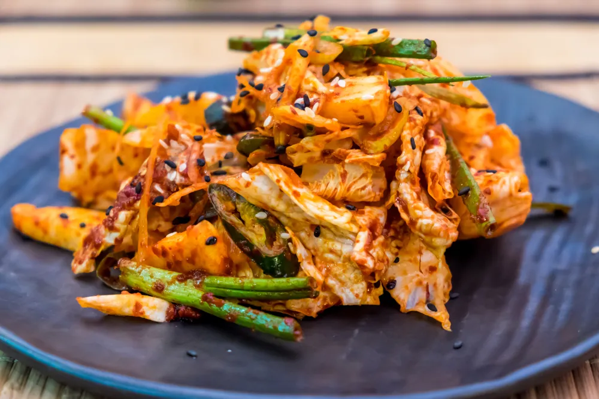
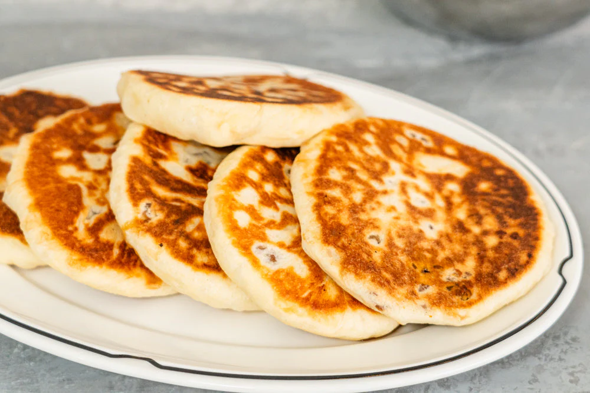

Oi Muchim

Crisp cucumber slices tossed in a tangy, spicy dressing made with gochugaru, garlic,
vinegar, and sesame oil. This refreshing and flavorful dish is a great way to awaken
your palate, offering a cool, zesty kick to begin your meal.
Wanna try it?
Gyeran Mari.

A fluffy rolled egg omelette filled with finely chopped veggies like carrots,
scallions, and sometimes seaweed. Sliced into bite-sized rounds, it's a delightful
start to any meal, offering a light and savory bite before the main course.
Wanna give it a go?
Ramen Noodles

Ramen is a comforting noodle sup featuring springy wheat noodles served in a rich,
flavorful broth—often topped with sliced meat, soft-boiled eggs, seaweed, and green onions.
It's the ultimate bowl of cozy and crave-worthy goodness!
Give it a try!
Kimchi

Kimchi is a spicy, tangy Korean side dish made from fermented vegetables like napa cabbage
and radish. Seasoned with chili flakes, garlic, and ginger, it's packed with flavor and
gut-friendly probiotics—perfect as a side or added to your favorite dishes for an extra kick.
Let's cook it together!
Bingsu

A cool and refreshing dessert made from finely shaved ice, topped with sweetened
condensed milk, red bean paste, fruits, and sometimes chewy rice cakes. Perfect
for a light, sweet treat on a hot day.
Figure out how it is cooked
Hotteok

A warm, fried pancake filled with a sweet brown sugar, cinnamon, and nut filling.
Crispy on the outside and soft on the inside, it's a comforting, indulgent dessert
enjoyed especially in winter.
Let's eat it!